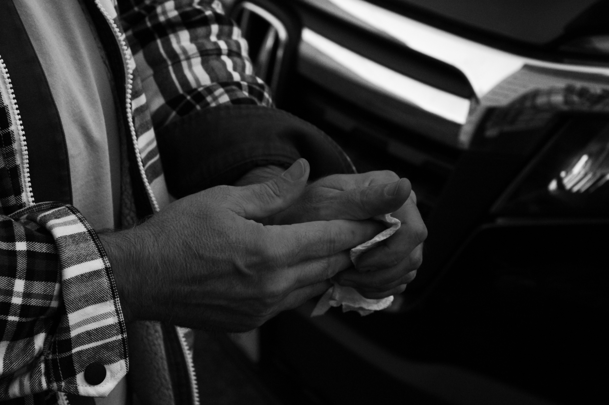
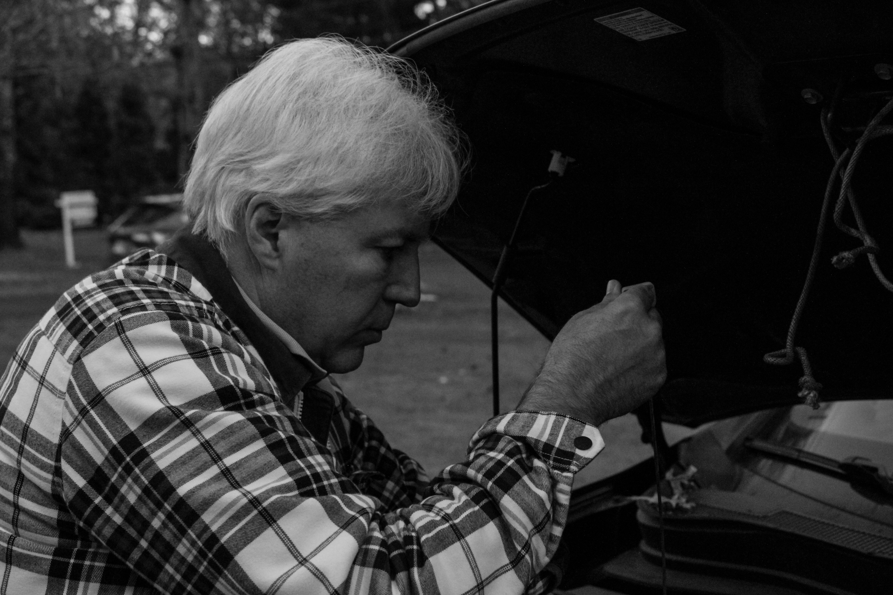
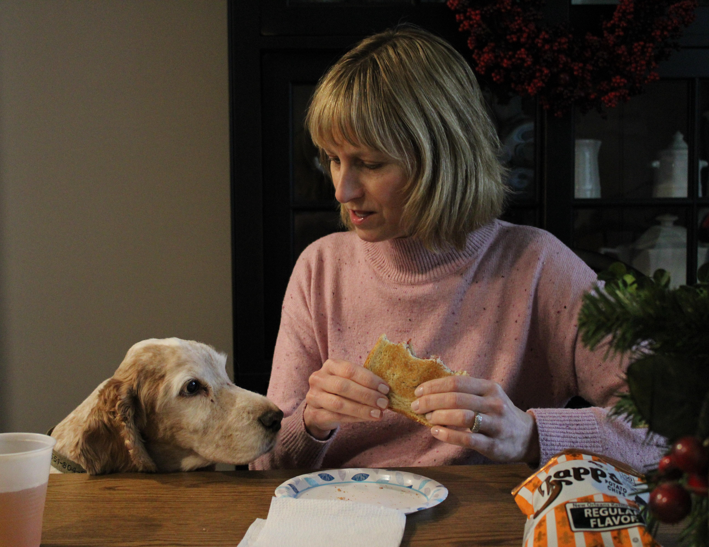

This was a photo I had taken when I was first experimenting with shutter speed, light exposure, and F-stop. To capture this image I went to a small overpass about five minutes away from where I lived and set up my camera on a tripod and took pictures of the highway as cars passed to get the trail effect coming off of the cars rear lights.

B&W Photo of Hands 2023
Here is a photo I took of my dad doing an oil change for my photography class in 2023. I specifically zoomed in on his hands because I wanted to experiment with telling narrative and story about a person without shooting their face. I really enjoyed this project and this is one of my favorite photos I took.

B&W Oil Change 2023
Here is a photo I took of my dad doing an oil change for my photography class in 2023. It is another photo from the same shooting series as the one prior, I really enjoy how this one came out as well. I think this photo captures my dad's image very well.

Final Project Portrait Shot 2023
This is one of the photos I took for my final project for my photography class in 2023. It is a picture of my mom at the dining room table in my house eating a PB&J with one of my dogs jumping into frame at the same time. I think the aspect I enjoy the most about this photo is the composition of the subjects and items within the frame.
"I Like It Project" 2023
Here is a photo I took in 2023 for a project in my photography class. For this project I was tasked with photographing something, someone, or a place that has significant meaning in my life. I chose my dad and photographed him in front of a piece of art I made where he was also the subject. I found this fitting because not only does my dad have significant meaning in my life but he has also modeled and helped me with my art endeavors all throughout my college career. :'D